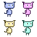

When I had to display thousands of 2D bitmap sprites on the screen in an AS3 Flash game, I used to create blitting engines to maximize performance and run my game at 30-60 fps. OpenFL uses a built-in Tilesheet system which is relatively easy to use and incredibly fast.
The idea is simple - take an image, slice it into tiles (can be differently sized) based on the content of the image and store each tile as an indexed object. When the draw call is performed, you can create as many tile instances on the screen as you want, changing the coordinates, index, and even various transformation settings.
Update: Tilesheets class has been removed in OpenFL 4, read about its new alternative Tilemap in my new tutorial.
The fact that Tilesheets rendering is GPU accelerated makes it even faster.
For this example I'll be using this 64x64 tileset.
I intend to extract 4 tiles from it, all of which coincidentally have the same size - 32x32.
Firstly I create a Tilesheet object and feed it the bitmap, which is stored in Assets:
var tilesheet:Tilesheet = new Tilesheet(Assets.getBitmapData("img/tileset.png"));Now add 4 tile types using the addTileRect() method:
tilesheet.addTileRect(new Rectangle(0, 0, 32, 32));
tilesheet.addTileRect(new Rectangle(32, 0, 32, 32));
tilesheet.addTileRect(new Rectangle(0, 32, 32, 32));
tilesheet.addTileRect(new Rectangle(32, 32, 32, 32));
Each newly added tile is automatically assigned an index, starting from 0.
Create a container for the graphics:
var container:Sprite = new Sprite();
addChild(container);
Now to actually draw something on the canvas, we need to call the drawTile() method. The first parameter is the graphics object of the canvas (Sprite in this case). The next one is an array of tile values, which are all Floats. The next optional parameters determine graphics smoothing, transformation flags and the count of drawn tiles.
When no flags are used, the tile data array consists of unlimited portions of 3 values in succession - x coodrinate, y coordinate and tile index. The following line will draw 1 tile of index 0 at the position x:100 and y:100.
tilesheet.drawTiles(container.graphics, [100, 100, 0], false);Similarly, creating two tiles would look like this:
tilesheet.drawTiles(container.graphics, [100, 100, 0, 150, 150, 0], false);When flags are used, the number of properties for each tile is increased. There are numerous flags available, all as static variables of the Tilesheet class. Those include: TILE_ALPHA, TILE_BLEND_ADD, TILE_BLEND_NORMAL, TILE_RGB, TILE_ROTATION, TILE_SCALE and TILE_TRANS_2x2. We'll take a look at the most commonly used flags here, the rest can be used similarly.
Let's draw a tile that's slightly rotated. By slightly, I mean 1 radian. Add the TILE_ROTATION flag to the drawTiles() call, and add a 4th value to the first tile in the array, which determines the rotation angle (in radians):
tilesheet.drawTiles(container.graphics, [100, 100, 0, 1], false, Tilesheet.TILE_ROTATION);Flags can be used in combination with each other. Here's how to draw a tile with 0.5 scale and 0.2 alpha value:
tilesheet.drawTiles(container.graphics, [100, 100, 0, 0.5, 0.2], false, Tilesheet.TILE_SCALE | Tilesheet.TILE_ALPHA);TILE_TRANS_2x2 is the most complex and the most powerful flag to use. Using this flags means adding 4 values to each tile in the array. Also, when this flag is used, the TILE_SCALE and TILE_ROTATION flags are ignored.
The default, transformation-less 2x2 matrix is [1, 0, 0, 1].
tilesheet.drawTiles(container.graphics, [100, 100, 0, 1, 0, 0, 1], false, Tilesheet.TILE_TRANS_2x2);To find out the transformation values, means to write them manually, or calculate using a Matrix object. Most frameworks that use Tilesheet would keep the pre-calculated transformation values instead of calculating them each time, to increase performance.
Here's an example of using a Matrix object and its methods to transform a tile:
var matrix:Matrix = new Matrix();
matrix.scale( -1, 1);
tilesheet.drawTiles(container.graphics, [100, 100, 0, matrix.a, matrix.b, matrix.c, matrix.d], false, Tilesheet.TILE_TRANS_2x2);
The same results can be achieved by simply entering the pre-calculated transformation matrix values:
tilesheet.drawTiles(container.graphics, [100, 100, 0, -1, 0, 0, 1], false, Tilesheet.TILE_TRANS_2x2);And here's a fun example that will fill your screen with 1000 randomly generated alien kitty things:
var tiles:Array<Float> = [];
var i:Int;
for (i in 0...1000) {
var _type:Int = Math.round(Math.random() * 3);
var _x:Int = Math.round(Math.random() * 800);
var _y:Int = Math.round(Math.random() * 480);
var _direction:Int = (Math.random() > .5)?( -1):(1);
tiles.push(_x);
tiles.push(_y);
tiles.push(_type);
tiles.push(_direction);
tiles.push(_0);
tiles.push(_0);
tiles.push(_1);
}
tilesheet.drawTiles(container.graphics, tiles, false, Tilesheet.TILE_TRANS_2x2);
Tilesheet class can be efficiently utilized in game development. In fact, most 2d OpenFL game frameworks use Tilesheet for rendering.
Game development using the Tilesheet class without any third party frameworks will be discussed in the next tutorial series. Popular game frameworks will be discussed, too.
If you'd like to learn more about game development in Haxe and OpenFL, take a look at my other tutorials, and subscribe to my free newsletter! Subscribers get regular updates as well as extra content.